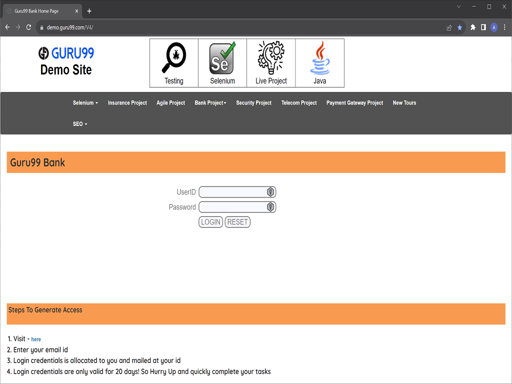
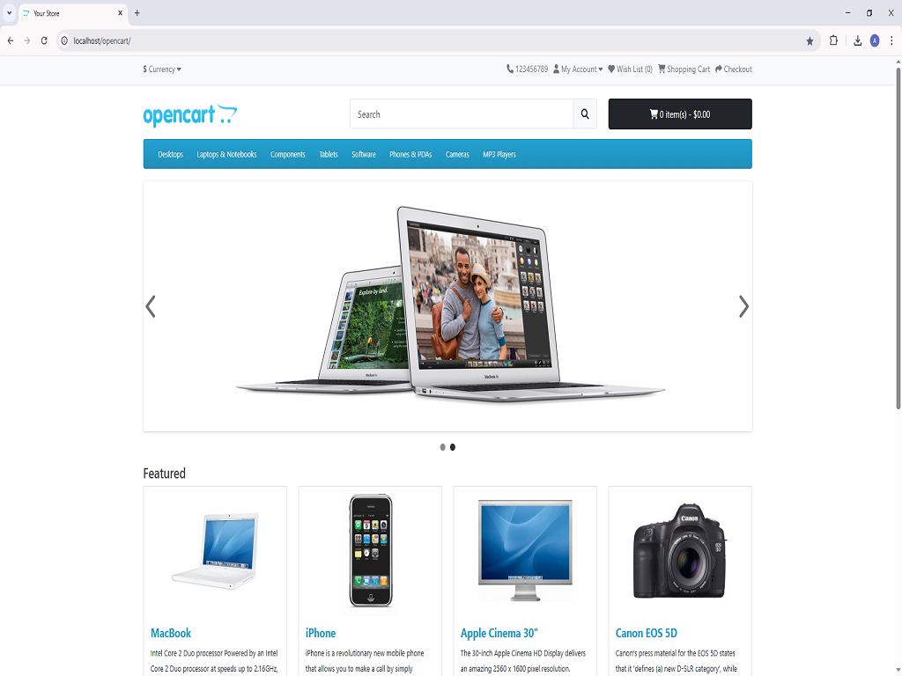
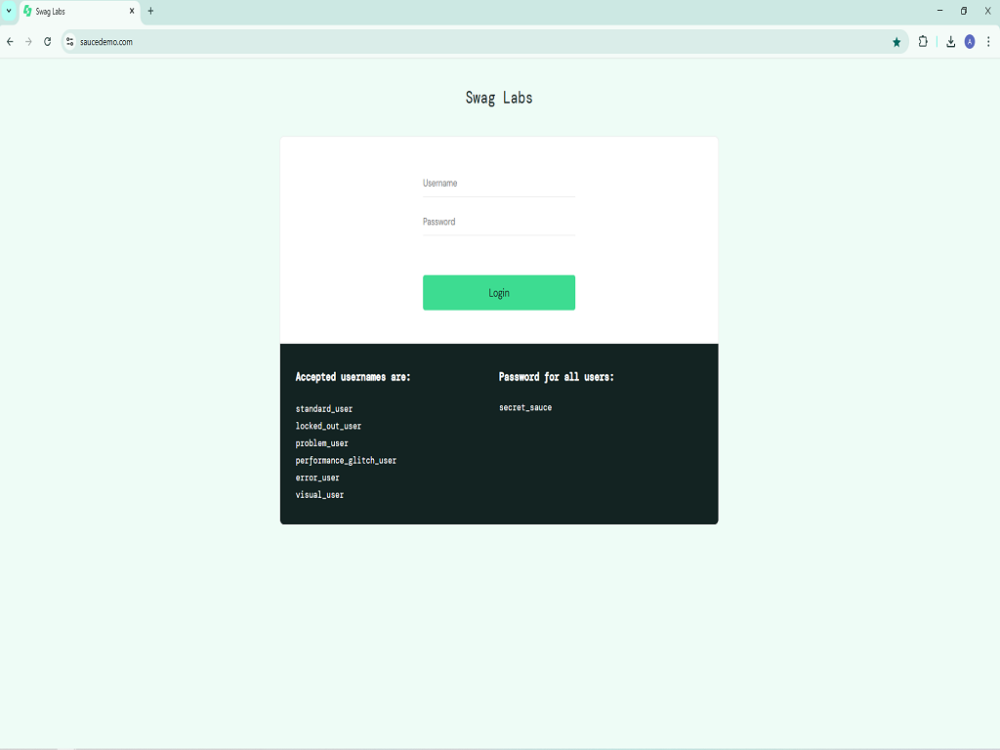
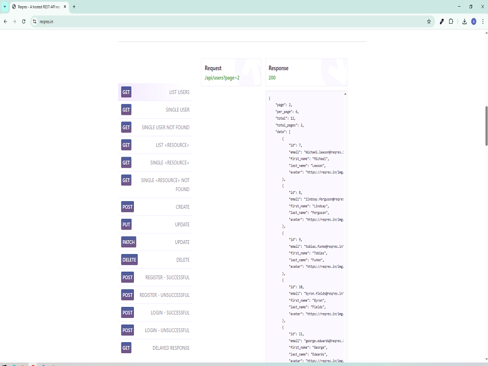
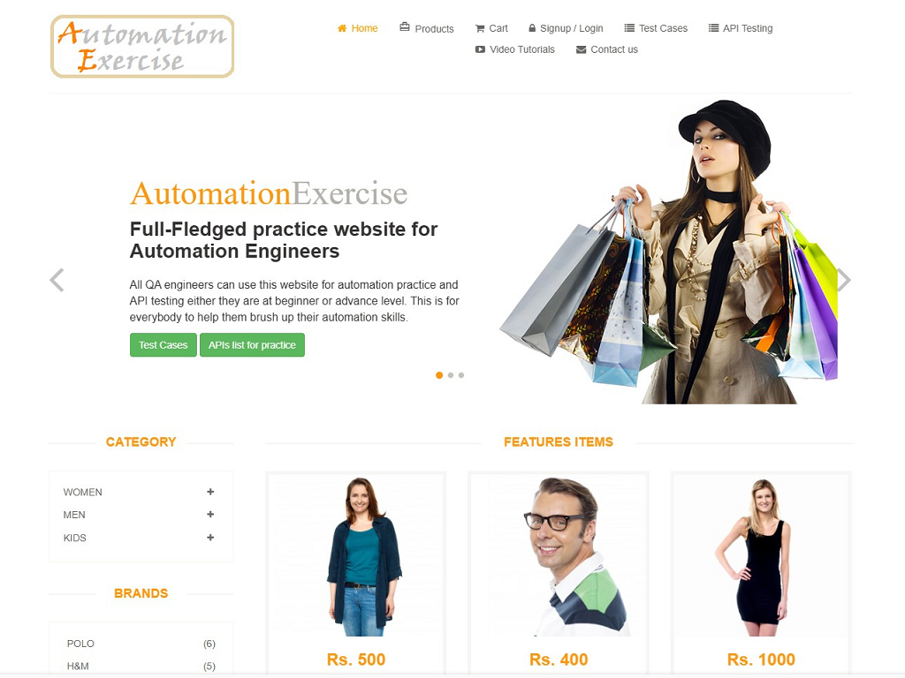

PROJECTS

Hybrid Test Automation Framework for Guru99 Bank Using Selenium & Java


This project demonstrates a hybrid test automation framework built with Selenium WebDriver, Java, and TestNG, following the Page Object Model. It integrates Log4j, ExtentReports and Maven into the project. The framework automates functionalities of the Guru99 Bank demo website, ensuring efficient and maintainable test execution.

Cucumber BDD Framework for Opencart website Using Cucumber, Selenium & Java
This project demonstrates a Cucumber BDD automation framework using Java, Selenium WebDriver, and Maven. It follows the Page Object Model and integrates logging, data-driven testing, and Cucumber HTML reports. The framework automates key features of the OpenCart demo site with clean and maintainable code.

TestNG - Based Test Automation Framework Using Selenium & Java
This project demonstrates the implementation of TestNG features such as annotations, parameterization, and test grouping in Selenium WebDriver. It showcases how to structure and execute automated test cases efficiently, leveraging TestNG's capabilities for improved test organization and reporting.

Postman API Testing with Newman for Reqres.in

This project showcases API testing using Postman for manual test case creation and execution, and Newman, a command-line collection runner for Postman, to automate test runs and generate detailed HTML reports. The tests cover various HTTP request-response scenarios, demonstrating validation of API functionalities.

Automated Test Cases for AutomationExercise.com Using Selenium & Java
In this project I have created automation script for the manual test cases provided on AutomationExercise.com using Selenium WebDriver, Java and TestNG. The automated scripts cover various functionalities, including user authentication, product searches, cart management and order placement.